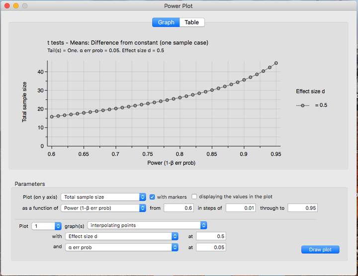

Lab 7
Hypothesis Testing
Truth Table:
| \(H_0\) True | \(H_0\) Not True | |
|---|---|---|
| Accept \(H_0\) | True Accept (1-\(\alpha\)) | False Accept Type II Error \(\beta\) |
| Reject \(H_0\) | False Reject Type I error \(\alpha\) | True Reject Power (1-\(\beta\)) |
Important Terms
\(\alpha\) level - This is what you choose a priori (before the experiment).
- The probability of rejecting the null hypothesis when the null hypothesis is true
- How much of your result is due to chance?
- The most common alpha level you will see is .05.
- Depending on how strict you want your results to be, you may also see values such as .01 and.001.
Degrees of Freedom (\(df\)) - The number of scores that are free to vary in calculating that statistic Only need to know N to calculate
\(df = N - 1\)
Critical Values - Cut-off values that define regions where the test statistic is unlikely to lie - Critical values in Table D: Critical Values of Student’s t distribution - Need to know alpha level and df to use the table.
T.Test
The t-test, as you will come to see, is quite similar to the z-test. The main differences are where the information is coming from.
If you remember, the z-test takes information from the population such as the mean \(\mu\) and standard deviation \(\sigma\).
The t-test takes information from the sample instead.
You will notice the formulas are set-up the same way, they just have different numbers.
Z-Test and T-Test Comparison
\(Z = \frac{\bar{X}-\mu}{\sigma_\bar{X}}\) and \(t = \frac{\bar{X}-\mu}{\sigma_\bar{X}}\)
Types of T-Tests
There are three types of T-Tests, but we will only be learning one for today.
- T-Test for single samples
\(t = \frac{\bar{X}-\mu}{\sigma_\bar{X}}\)
- T-Test for paired samples
\(t = \frac{\bar{D}}{\sigma_\bar{D}}\) - T-Test for independent samples
\(t = \frac{\bar{X}_1 - \bar{X}_2}{\sqrt{\frac{S^2_1}{N_1}+\frac{S^2_2}{N_2}}}\)
T-Test Example (R-Calculation)
Let us start off with a sample of 20 scores:
# To reproduce
set.seed(123)
# Set vector of reaction time
Reaction_Time = round(rnorm(20,550,10.5),digits=2)
# Set mean to test against
null_mu = 670
# Calculate t
t.test(Reaction_Time,mu=null_mu)
One Sample t-test
data: Reaction_Time
t = -51.897, df = 19, p-value < 2.2e-16
alternative hypothesis: true mean is not equal to 670
95 percent confidence interval:
546.7078 556.2672
sample estimates:
mean of x
551.4875 Writing our results
As we discussed in the previous lecture, we will need to make sure to report our findings in proper statistical formats.
Specifically, when we report the results of a t-test it should look like this:
\[t(19) = -51.897, p <.001\]
T-Test Example (Hand-Calculation)
\[t = \frac{\bar{X}-\mu}{\sigma_\bar{X}}\] Let us imagine we have 10 numbers:
{111.66,117.50,104.82,146.03,134.50,106.52,115.17,114.40,129.36,119.00}
These numbers have a standard deviation of 12.99.
First, we will need to take the mean:
\[\frac{111.66+117.50+104.82+146.03+134.50+106.52+115.17+114.40+129.36+119.00}{10} = 119.896\]
We want to see if this mean is different from the population mean (\(\mu\)), 126.42.
We will also need to solve for the standard error of the mean (\(s_\bar{X}\))
Remember that \(s_\bar{X} = \frac{s}{\sqrt{n}}\)
\(s_\bar{X} = \frac{12.99}{\sqrt{10}} = 4.107\)
Our new equation should look something like this:
\(t = \frac{119.896-126.42}{4.107} = -1.588\)
\(t = -1.588\)
You’ll notice that when we did the t-test in R we were given a p-value. When you calculate the value by hand, there is no such luck! So, you will have to check for a critical value to see if the value you’ve calculated is past the rejection zone.
Let’s make sure this works in R as well:
One Sample t-test
data: x
t = -1.588, df = 9, p-value = 0.1467
alternative hypothesis: true mean is not equal to 126.42
95 percent confidence interval:
110.6026 129.1894
sample estimates:
mean of x
119.896 Power
When we talk about power in the context of an experiment, we are referring to the probability of detecting an effect if the effect exists in nature. Power is an important part of experimental design. One of its many uses is in the realm of grant proposals. Let’s imagine you want to run an experiment and you would also like a grant so you can fund the study. When you propose the study, the board that will be reviewing your claim will want to know if it is likely to work. If you can show them that your experiment has high power, you will need fewer participants to find the effect (if it exists), and will cost less money!
There are several ways to compute power, however, we will focus on the computer assisted method, using a program called G-Power. You will not be required to know how to use the program intricately, rather, you will just have to know how to interpret the output of the program as well as input one or two parameters.


